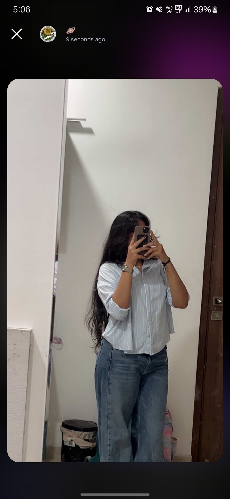
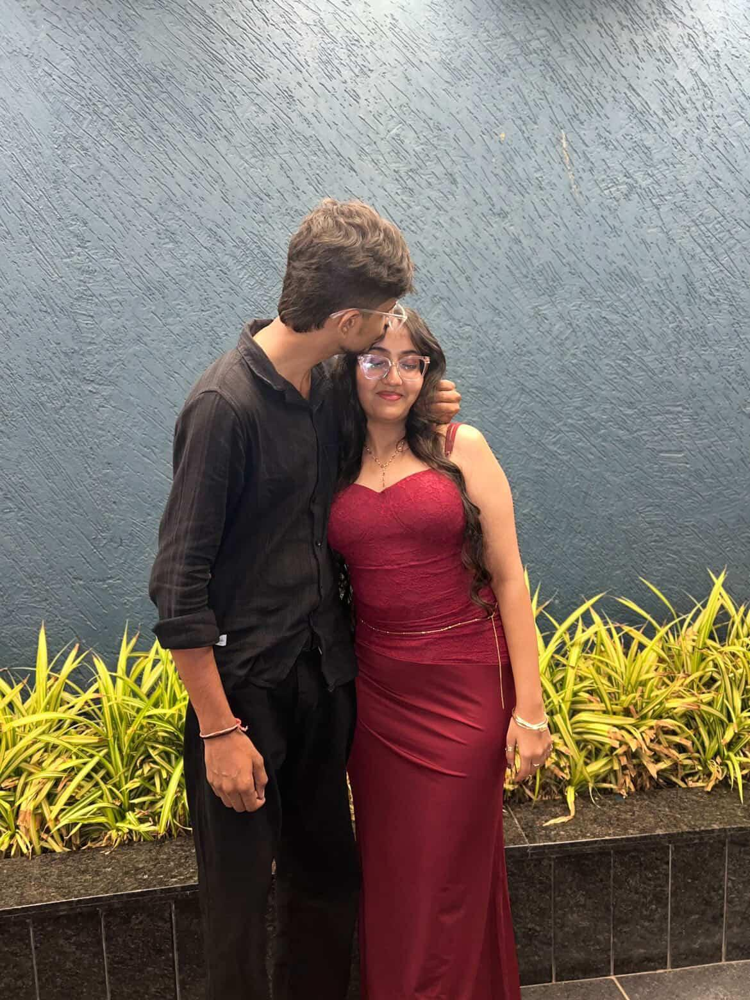

Everything around us was normal, but for me it wasn’t. ✨
It felt like time slowed down just for us. 🫶
I still remember every step we took there... ❤️
My cutue Maahii 😭🫶
Idk what I'm gonna write, and how it felt to you, but I'm definitely gonna write my feelings and everything that I felt about you.
So, the story begins on 17 March 2025 (great day 😭✨)...
I was checking messages in my closest GC when I noticed that tya koine add kryu chhe, admin Masalachhas e. And the account was **ifwklaus**. The PFP was a photo of a smiling girl, I guess some character from a novel or web series. And idk why, but I shipped that girl in my Panipuri GC 😭. That was the best thing I have ever done.
So, I added that girl to my GC on 18 March, and she sent the text **"biscoff cheesecake"** 😭. Then I asked for her intro, and she gave it. And that intro was gonna become our babygirl's name btw 😭😭🫶.
That prettiest intro was:
**"Rimmi, 18, Gandhinagar"** 💖
My fate is that I don't have a screenshot of it 😭, but never mind. I have a very sharp memory and I remember everything about you 😋.
That intro sounded cute, so I talked more with her. Then we went on a call, and she started telling ghost stories 👻😭. She was like a cute child, yk, a cute bacha who talks a lot and never stays quiet 😭🫶. And by coincidence, her voice was babyish.
(My gosh 😭🫶)
I fell for that. Idk if I started liking her or what, but I loved talking to her, and I just wanted to talk to her more and more.
Slowly, slowly, I got attached to her.
And then one day, after around 5 days of talking, on a night before her GUJCET or NEET (I don't remember exactly, but probably GUJCET), we talked till 4:00–4:30 AM 😭✨.
And that day, I realized that I'm in love.
The moment I realized it, everything just felt different. Anyone could clearly see the power of the love I had for her. Oh God, there were butterflies everywhere 🦋😭.
I started laughing at every joke of People around me started asking why I was acting so different 😭. And that was the moment when I truly understood the meaning of that line from *Tere Mast Mast Do Nain*:
**"Badle se lag rahe hain andaaz mere..."** 🎶
And remember, Maahii, how we used to sleep on calls while listening to songs? Bhaiii, those were truly magical nights 😭🫶.
And just like that, our story began.
I found everything in you.
And then... you deactivated.
That day, I felt a kind of fear that I had never felt before. I cried so much 😭. Idk why I cried that hard, but I did. Still, my heart kept holding on to the hope that one day you'd come back and everything would be alright.
That hope made me cry, but it also made me the happiest 😭🫶.
Maahi, the pain of not being able to talk to you started destroying me. I just cried, cried, and cried like hell 😭💔.
One day, I decided to get over you. I started visiting my old friends, trying to distract myself, but nothing worked.
And thankfully, I could never get over you.
I will always be grateful for that.
You know, after that incident, I finally understood the true meaning of unconditional love ❤️.
And after that, my whole life changed.
Even though you weren't with me, I became happier than ever because your presence was everywhere.
In my mind.
In my dreams.
In my wallpaper.
In my wallet.
In my gallery.
You became my truth.
You became my everything.
And that was the time when I found my God in you, and that's why I still call you my goddess 👑✨.
And honestly, you are.
**"Nai to aatlu thayu mari life pan ahiya aaine j badhu kem atakyu?"**
And actually, it's a good thing that it did ❤️.
I love you even more, Maahiidaa 🫶.
You don't even know how happy I am to have you in my life.
And till my very last breath, I want to be with you.
**"Mne joie ke hu mara last breath tari godi ma lau."** ❤️
This was the phase of that song:
**"Jo tum ho agar, to tere siva kuch dikhta nahi...
Gaye tum kidhar, ke tere bina mann lagta nahi..."** 🎶
Like bhyii 😭...
Then haan, thodi thodi aapdi vaato thati, but that was never enough for me.
But mne tane disturb natu karvu, that's why I tried my hardest not to text you.
Then dhire dhire November aayu.
Mari birthday pan aayi 🎂.
And for the second time in my life, I was genuinely excited for my birthday.
(The first time was at my mama's house when I had cake and a proper celebration 😭.)
Mari birthday vaadi raat par hu library ma hato. Koine j khabar nati, but me pelo photo lagayo.
People remembered that the 27th was my birthday. I got so many wishes 😭.
But not the one wish that I was desperately waiting for.
And honestly, I was very sad.
But compared to the pain of losing you, that sadness was nothing 💔. Then everything was normal, just like every other day. Nothing much happened, but every single day I missed you. Sometimes I couldn't control my emotions and ended up crying 😭.
Then January came, and on the 1st of January, I made wishes for you. I wished that this year would be the absolute best for you ❤️.
Dhire dhire February aayi gayo, and we started talking again around the 10th. I even wished you on what I thought was Promise Day 😭, but it wasn't Promise Day at all. I just mistook it for that.
Then one day, around the 15th of February, we were on a call, and I asked if we could meet. You said, **"18 malisu."**
I was so happy 😭.
Me shirt lidho pink, because e divse e pervo hato. Then niche mate jeans levu tu, but I had no money, and Himanshu nu to tane khabar j che 😭.
Tyare hu radyo ke hu tane mali pan nai sakto.
And e divse hu radto hato, tyare Raj bolyo:
**"If ene prem hase, to fatela kapda ma pan tane appreciate karse."**
And honestly, e vaat mane tari birthday pela samjayi jyare me gift vadu kidhu ke hu nai aapi saku. E vaat thi tane 1% pan fark nato padyo. All you wanted was me to be there ❤️.
Tho tyare things got worse, but don't think about that right now. Atyare tu happy rehva mate che, ml 🫶.

Then we randomly met on the 20th.
Bhai, I can never forget that day 😭😭😭.
The very first thing I said was:
**"Tu ketli jaadi che."** 😭
And you replied:
**"Tu ketlo patlo che."** 😂
Just us being us, as always.
Then we went to eat chorafali, and tya sudhi badhu thik hatu. But honestly, e time par excitement etli hati ke chorafali gala ni niche j nati jati 😭. Butterflies aavti ti 🦋.
Then we came to GH4 because you said, **"tya jaie."**
Ahiya aayine we roamed around and judged people like always 😭.
Atyar sudhi aapda vachhe physical touch ocho hato, then me pelu kryu — matha par haath rakhine hu kidhu:
**"Aram leva ma chale em che."** 🫶
Then aapde jagadya 😭.
After that, we sat in the cafeteria and played Ludo, jema hu jityo 😎.
Then pela 100 na chanajor 😭😭, and ena jode aapde songs sambhadya.
And honestly, those moments are still with me.
The first song you played was **Mere Bina**, then **Tu Hi Mera**, then **Tera Deedar Hua** 🎶.
That whole time, I was just admiring you, and everything felt so peaceful ❤️.

Then aapde lake gaya. Me tane badhi lake jode ni stories kidhi, and tya jaine aapde bas besya.
Then me tane birthday vadu kidhu, and idk why, but e time par tu thodi sad dekhava lagi.
And that day became one of my favourite memories 🫶.
Then we started meeting more often, almost every third day.
Dhire dhire mane realize thayu ke tu pan mara mate feel karva lagi hati. You cried only in front of me, that resting your chin, chupke malva aavu, and all those little things ❤️.
One day, I became sure about everything. Your actions were saying everything that words never did.
After that, our bond kept growing stronger, and every memory with you became special.
Even after the fights, misunderstandings, and difficult phases, one thing never changed — how much you meant to me.
Ek time par to lagyu ke badhu khatam thai jashe, but we always found our way back.
**Kyarey nai thaie alag, Maahh ❤️**
You know, every pain, every tear, and every difficult moment felt worth it because of you.
I would cry a whole lifetime just to see you smile 😭🫶.
And at the end of this letter, I just want to say that I love you more with every passing day ❤️.
**"Maro divas bhi tu,
Mari raat bhi tu,
Maro dharm bhi tu,
Mari jaat bhi tu,
Maro aaj bhi tu,
Mari kaal bhi tu,
Maru astitva bhi tu,
Mari haqiqat bhi tu,
Mari duniya bhi tu...
And puro puro taro hu..."** ❤️
I love you, Maahhh 💕